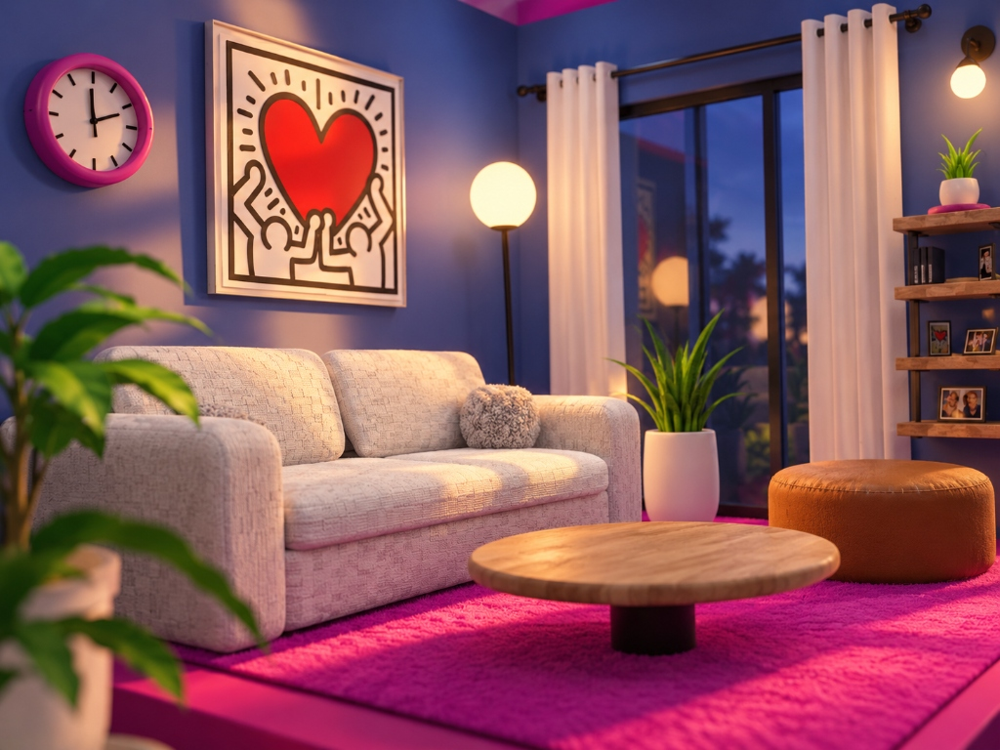

Ascoltare
Capire il contesto, le persone e gli obiettivi. Fare le domande giuste prima di cercare una risposta.
Design, codice e qualche altra ossessione creativa. Creo identità, interfacce ed esperienze digitali che danno forma alle idee.
Graphic & UI/UX Designerbridging Design & Code


Una selezione di progetti
Esplora il lavoro

Chi sono
Nel mio lavoro quotidiano mi occupo di UI/UX e web design, progettando esperienze digitali chiare, intuitive e funzionali, con un approccio centrato sulle persone e attenzione ai loro bisogni.
Parallelamente porto avanti Bypatdesigner, il mio progetto freelance, dove seguo i progetti dall'identità visiva alla realizzazione di siti e interfacce, unendo design e codice.
Amo studiare, sperimentare e imparare attraverso tentativi ed errori. Per questo continuo a formarmi nello sviluppo software, dal front-end al back-end, con l'obiettivo di costruire un profilo ibrido tra UX design e sviluppo.
Un po’ di più su di me
Cosa posso fare per te
Una visione d’insieme.
La cura per ogni dettaglio.
Ricerca, architettura dell’informazione, wireframe e prototipi. Parto dalle persone per progettare interfacce comprensibili e piacevoli da usare.
Identità visive e siti web con una direzione precisa. Tipografia, colore e composizione lavorano insieme per raccontare il tuo progetto.
Dal prototipo al browser: interfacce responsive, accessibili e curate anche nelle interazioni, con HTML, CSS e JavaScript.
Modellazione, materiali ed esplorazioni con nuovi strumenti. Un laboratorio per trovare prospettive e linguaggi visivi diversi.
Come lavoro
Capire il contesto, le persone e gli obiettivi. Fare le domande giuste prima di cercare una risposta.
Mettere ordine nelle idee, definire una direzione e costruire una soluzione da esplorare insieme.
Trasformare la direzione in un sistema visivo, un’interfaccia e un prototipo concreto.
Sviluppare, verificare e affinare. Curare l’esperienza su ogni schermo, fino all’ultimo dettaglio.
Altre prospettive
Tutti i progetti ↗Hai un’idea? Partiamo da lì.